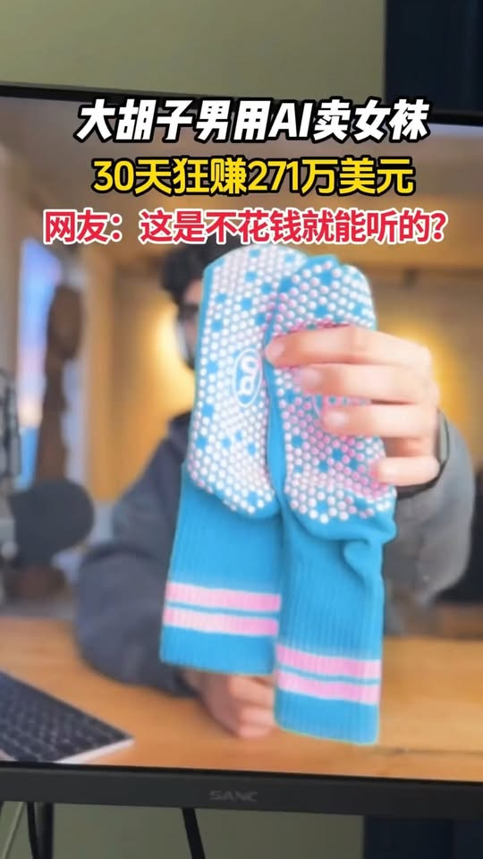

AI 賣普拉提防滑襪月收 271 萬美元？｜把選品工作流與未證實收入敘事拆開看

一句話摘要
這支 Reel 的可用啟發不是「問 ChatGPT 一句就能賺錢」，而是把公開內容當成**研究線索**：先找可能成長的需求、再從使用情境萃取產品語言、最後以實際市場與營運資料驗證。影片最吸睛的 271 萬美元、11.5% 與「90% 的人都能複製」則沒有足夠證據支持，不能當成可複製的收入承諾。
可直接確認的來源資訊
Facebook 分享連結解析為 The Eighth Sense【第八感】的 Reel，影片約 320.9 秒。登入牆外頁面可見標題為「AI賣襪狂賺271萬美金，他只問了ChatGPT一個神級問題，就找到了年增長11.5%的藍海品類」，並標示約 2.1 萬 reactions、263 則留言與 5,217 次分享；yt-dlp 擷取到的觀看數是 931,994，OG 卡片則顯示 150 萬次觀看。這些是不同時間／介面取得的來源指標，不應合併為單一精確數字。
本次取得公開影片、Whisper 中文逐字稿草稿與多個畫面。畫面可直接讀到 Shopify 風格儀表板的「Conversion rate over time 7.19%」與 4 月 1 日至 10 日時間軸，但沒有可辨識帳號、商店名稱、完整資料範圍或計算方式。
影片怎麼說：一條由研究到投放的敘事
影片把個案描述成以下步驟：
- 以 Google 搜尋量和市調數字鎖定「成長的藍海市場」，敘事指向普拉提。
- 從 YouTube 上「普拉提女孩的一天」等內容的字幕／文案，交給 ChatGPT 列出反覆被提及的產品，從中挑出防滑襪。
- 觀察使用者對品類的說法，推論尚無強勢品牌佔據心智，稱為「品牌真空」。
- 以受眾的生活風格語言推導視覺方向；片中展示 Glossier 作為美學參考。
- 依影片說法，接著找供應商、用 AI 做產品素材與網站，再以短影音導流與再行銷。
這是一個**待驗證的研究框架**，不是已被驗證的從零到營收公式。尤其「沒有強勢品牌」需要競品、商標、通路、價格帶、評論、搜尋與廣告資料共同檢驗；不能只憑幾則影片提及語句判定。
影片中哪些數字只可視為主張
270 至 271 萬美元
影片先說「30 天內賺 270 萬美元」，後段又說「4 月一個月銷售額 271 萬美元」。兩個說法都沒有指出公司或品牌名稱、創辦人、營收或淨利口徑、日期範圍、訂單／會計證明或獨立媒體報導。因此目前只能證明：**影片帳號發布了這項主張**；不能證明它是實際營收，更不能當成利潤或一般人可達成的結果。
11.5% 的市場成長
影片沒有說明此數字的市調機構、地區、起訖年度、是普拉提、運動防滑襪或其他子品類。Grand View Research 與 Fortune Business Insights 都有公開的整體襪類市場頁面，但研究定義、基準年與預測區間各不相同，也沒有把影片中的數字、品牌或 271 萬美元個案串在一起。即便某個細分市場真的有 11.5% CAGR，也只是特定模型的預測，不能推導任何單一商店的營收。
7.19% 轉換率
該數字在影片中的儀表板畫面確實可見，卻無法確認它屬於誰、使用哪個事件定義、流量來源、期間、產品組合或是否經過剪輯。轉換率應搭配訪客品質、平均客單、退貨、廣告成本、毛利、回購與稅務一起看；單獨一個百分比不能代表生意健康。
對 AI 選品的可用做法：把模型當研究助理，不是裁判
OpenAI 條款提醒模型輸出可能不正確或不完整，不能作為唯一事實／決策來源。較穩健的流程是：
- **建立假設。** 讓模型從公開字幕、評論、訪談逐項整理出「需求、痛點、使用情境、替代品」；同時保留原始連結與引用段落。
- **以外部資料交叉驗證。** 檢查 Google Trends、關鍵字量、競品價格、評論、平台規範、商標、供應樣品、物流、MOQ 和退貨可能性。
- **先做小規模實驗。** 以低成本素材、明確標記的測試頁或預購調查驗證需求，不用 AI 圖或漂亮網站替代真實產品品質與履約能力。
- **用完整單位經濟做決策。** 把產品成本、運費、付款手續費、退貨、廣告獲客成本、客服與稅務算入；不要用 GMV 或單日轉換率代替獲利。
- **保留人工與合規關卡。** 供應商合約、商標／外觀設計、廣告聲明、消費者法、付款與採購，都不應由模型自行判斷或執行。
對收入型短影音的檢核清單
FTC 對網路廣告的基本原則是主張應真實、不得誤導，且應有合理依據。遇到「月收」「只靠一招」「人人可複製」的內容，先問：
- 可識別的公司、產品、當事人與原始訪談在哪裡？
- 金額是 GMV、營收、毛利還是淨利？期間、幣別與會計口徑是什麼？
- 有沒有可核對的商店、產品頁、第三方報導或經同意揭露的後台資料？
- 市調數字的報告名稱、品類定義、地區和預測期間是什麼？
- 成功是否包含既有流量、資本、供應鏈、團隊、投放預算或無法複製的條件？
任何一項無法回答，都應把影片視為靈感或待查假設，而不是商業承諾。
重要限制
- 本次沒有找到能將「271 萬美元」、「11.5%」與可識別公司／品牌／當事人完整對應的獨立證據。
- 影片顯示的 Grounded Grip Socks 製造文件、Glossier 搜尋結果及 YouTube 留言皆屬敘事畫面，不能直接證明彼此的商業關聯。
- 本文沒有依影片進行採購、投放、建立商店、聯繫供應商或使用付款資料。
- 本文保存的是來源、可讀畫面與查核邊界；並非投資、選品、採購、法律或財務建議。
來源
- Facebook Reel：https://www.facebook.com/reel/1845327606129180
- Facebook 原始分享：https://www.facebook.com/share/v/19mj8SvkzG/
- Grand View Research · Socks Market：https://www.grandviewresearch.com/industry-analysis/socks-market
- Fortune Business Insights · Socks Market：https://www.fortunebusinessinsights.com/socks-market-106408
- OpenAI · Terms of Use：https://openai.com/policies/terms-of-use/
- FTC · Advertising and Marketing on the Internet：https://www.ftc.gov/business-guidance/resources/advertising-marketing-internet-rules-road
- 來源封存：`source-archive/2026-10-24-facebook-ai-pilates-grip-socks-claim-boundary.json`